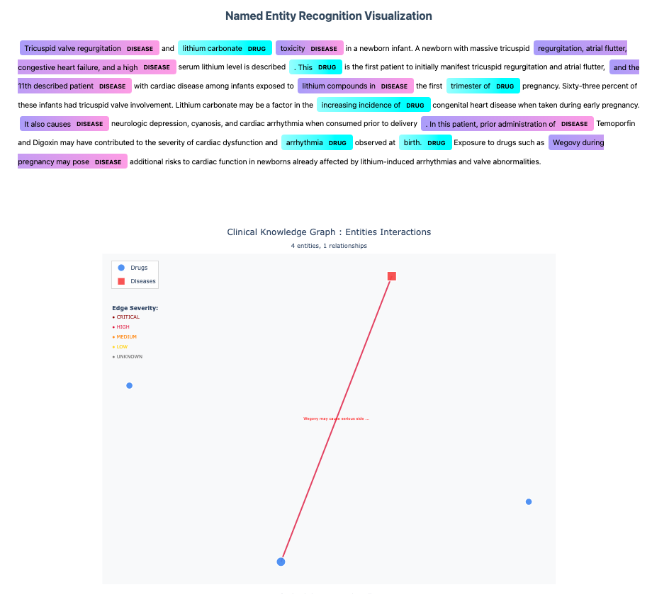
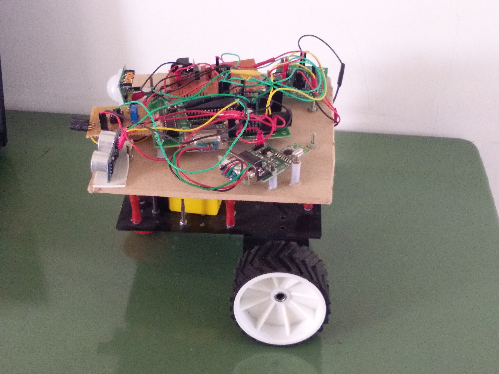

Medicare Knowledge Graph Assistant with LLMs
Personal Project
Oct 2025

An AI powered Medicare application that uses Named Entity Recognition (NER) to extract diseases, drugs and symptoms from clinical text. The system builds a knowledge graph to detect and explain potential drug interactions and treatment conflicts, enhancing clinical decision making with transparency.
CommonLit - Evaluate Student Summaries
(Kaggle Bronze Medal Winner)
Kaggle Competition
Oct 2023
Built an NLP model to automatically evaluate student-written summaries (grades 3–12) using transformer-based architectures. Achieved strong performance through a robust cross validation strategy and auxiliary training focused on grammar and writing patterns across different grade levels.

Feedback Prize - English Language Learning
(Kaggle Silver Medal Winner)
Kaggle Competition
Nov 2022
Developed models to evaluate the language proficiency of English Language Learner (ELL) students from grades 8–12 using their written essays. Followed a robust cross validation approach and customized transformer heads to better capture grammar, coherence, and writing quality. The solution helps provide more accurate feedback for students and streamlines grading for teachers.
U.S. Patent Phrase to Phrase Matching
(Kaggle Silver Medal Winner)
Kaggle Competition
Jun 2022
Developed a semantic similarity model to identify key phrases and contextual relationships within patent documents. Leveraged transformer based architectures and domain context features to accurately match semantically similar phrases across diverse technical domains. The solution followed a CV inspired strategy with customized transformer heads and effective preprocessing which significantly improved contextual understanding and overall performance. This approach supports efficient patent examination by improving retrieval and reducing redundancy in prior art searches.
NBME - Score Clinical Patient Notes
(Kaggle Bronze Medal Winner)
Kaggle Competition
May 2022
Developed an NLP solution to automatically identify key clinical concepts in medical student patient notes, mapping rubric features (e.g., “diminished appetite”) to diverse textual expressions (e.g., “eating less”). I used transformer-based models with customized heads and a cross-validation strategy to ensure accurate and reliable detection of clinical features. This solution improves scoring efficiency, enhances interpretability, and helps medical educators provide timely, actionable feedback.
PetFinder.my - Pawpularity Contest
(Kaggle Bronze Medalist 212th)
Kaggle Competition
Jan 2022
Developed a computer vision model to predict the popularity (“Pawpularity”) of pet photos using image and metadata features. Careful image data preprocessing played a key role in improving model performance, supported by a robust validation strategy. The solution helps shelters and rescuers enhance photo appeal, increasing adoption chances for stray animals.
Intelligent Life Detection Robot
Graduate Project
May 2016

Developed a cost effective rescue robot using Pyroelectric Infrared (PIR) and ultrasonic sensors to detect human presence and distance in disaster zones. The system wirelessly communicates detections via Zigbee, aiding faster and safer rescue operations.